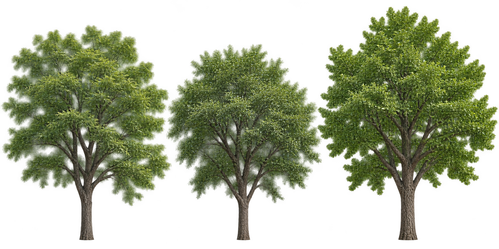
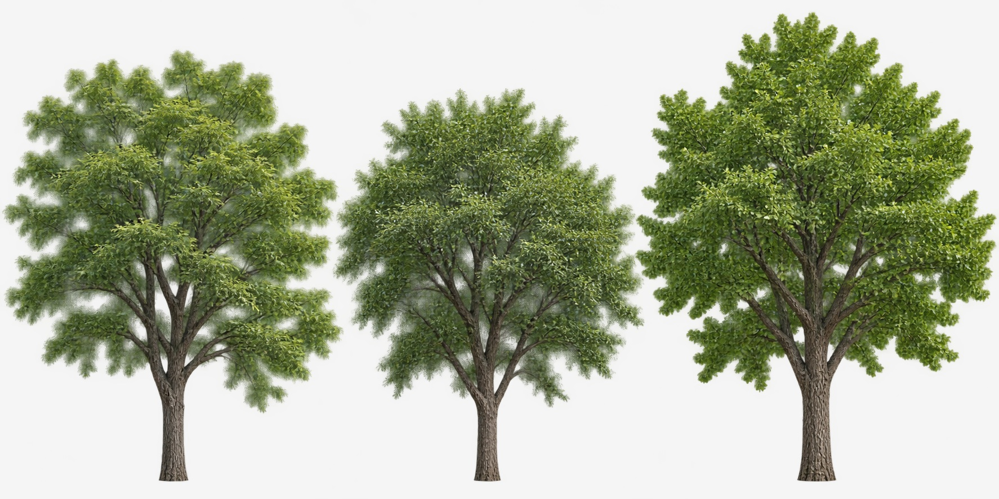
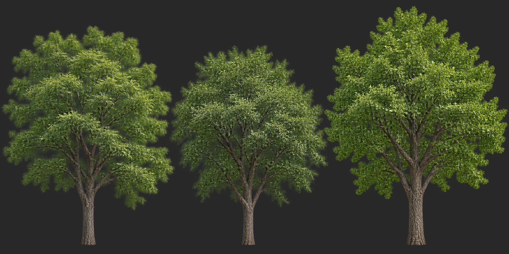

Pagodipuu · siperialainen jalava · neidonhiuspuu. Kokonaiset puut sivulta, läpinäkyvä tausta.
Tuottajan visuaalinen tarkistus läpäisty. PT:n hyväksyntä ja peliin kytkentä avoinna.

2048 × 1024, tekninen suurennos 1774 × 887 -alkuperäisestä. Alkuperäinen alfa säilytetty.


Lehvien alfa on osin pehmeä; etualan mediaani 248/255. Näkyvää maavarjoa tai selvää vihreää reunavuotoa ei havaittu. Lopullinen alfa ja mipmapit tarkistetaan pelissä. Tarkka kamerakulma ja vastaavuus Tripo-malleihin eivät ole kalibroituja.